자동차 사고 예측
2021년 1학기에 수강한 기계학습 교과목에서 수행한 텀프로젝트입니다.
기계학습 모델을 구현하여 라즈베리파이를 활용해 사용자 친화적인 시스템을 만드는 것이 목표입니다.
영국 자동차 사고 데이터를 바탕으로 사고를 예측하는 모델을 구현하고자 노력했지만
데이터가 워낙 방대하여 제대로 분석하지 못했고 완성 모델의 성능도 좋지 못했습니다.
저는 주로 GUI 설계와 구현, 포팅을 담당했으며 출력될 결과의 데이터 분석도 진행했습니다.
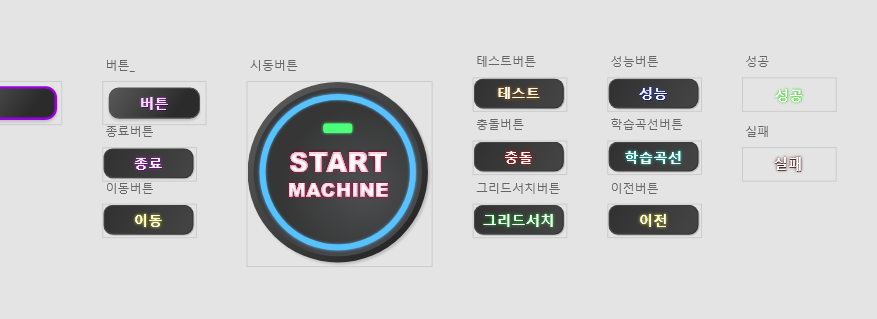Adobe XD를 이용해 GUI를 구성하는 데 필요한 요소들을 디자인했습니다.
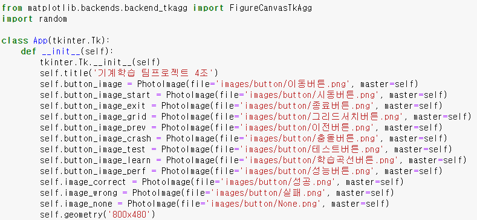 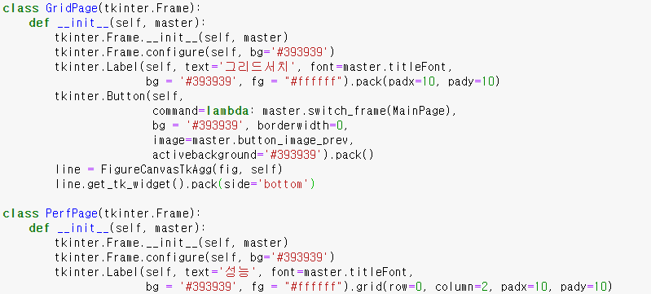tkinter 라이브러리를 이용하여 화면을 구성했습니다.
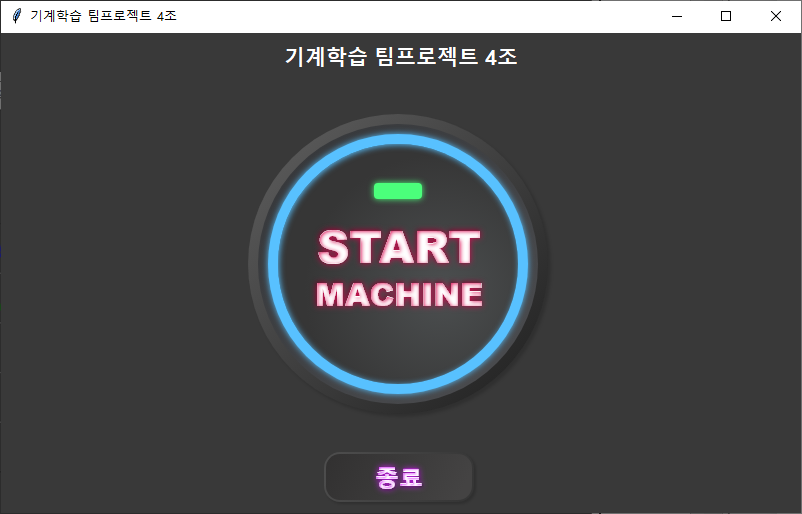START MACHINE 버튼을 통해 메인 화면으로 진입합니다.
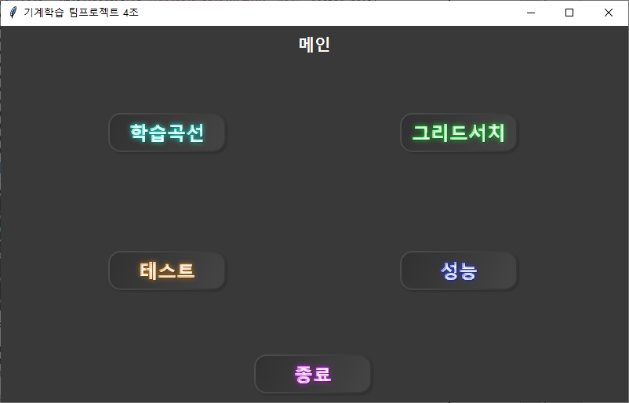메인에는 학습곡선, 그리드서치, 테스트, 성능 버튼이 있고 버튼을 클릭하면 각 화면으로 진입합니다.
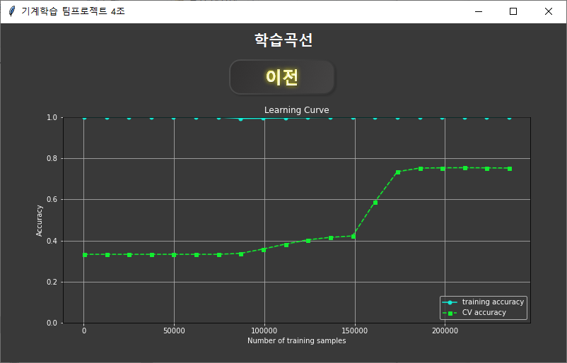 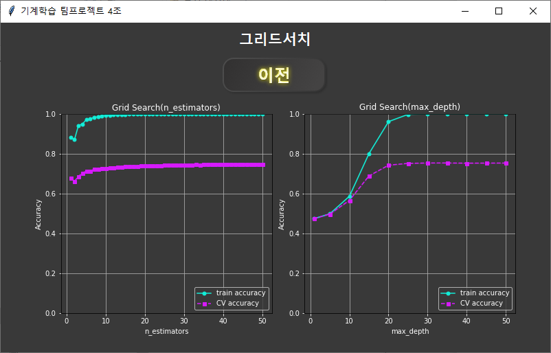훈련셋 학습 과정에서 진행한 학습곡선과 그리드서치 결과를 시각화합니다.
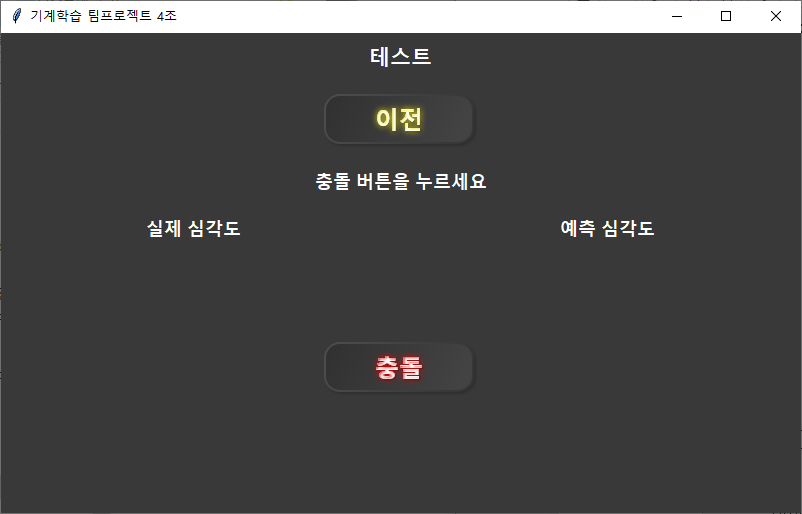 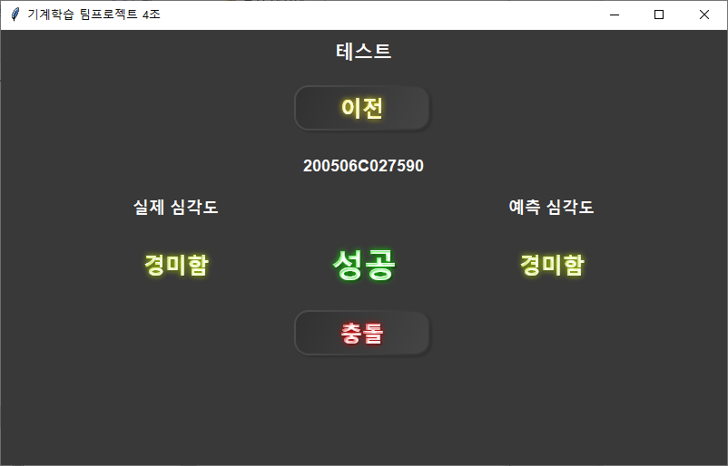충돌 버튼을 클릭해 테스트셋 데이터 중 무작위로 하나의 사고를 불러와 실제 심각도와 모델이 예측한 심각도를 비교해 예측의 성공, 실패를 보입니다.
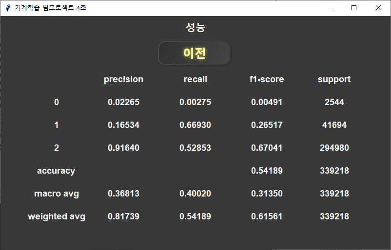테스트셋으로 분류된 결과의 성능을 수치로 나타냅니다.
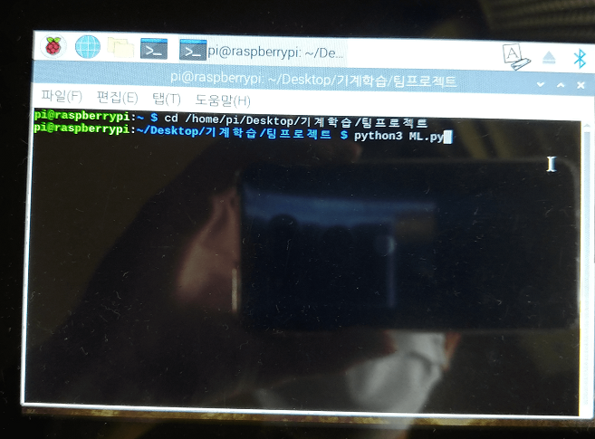완성된 GUI를 라즈베리파이에 포팅한 모습입니다.
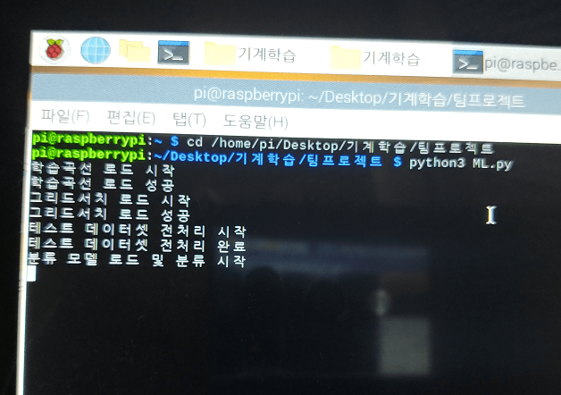분석에 시간이 걸리므로 진행 상황을 출력하도록 했습니다.
분류가 완료되면 시작 화면으로 진입합니다.
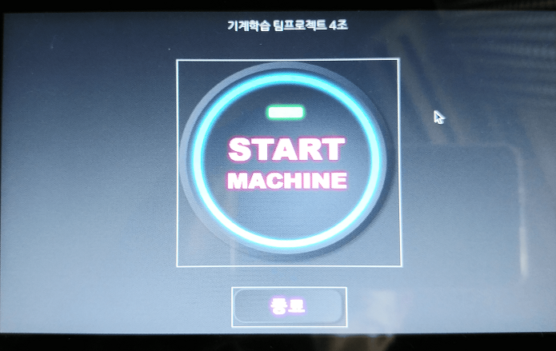시작 화면입니다.
- START MACHINE: 메인 화면으로 진입합니다.
- 종료: 시스템을 종료합니다.
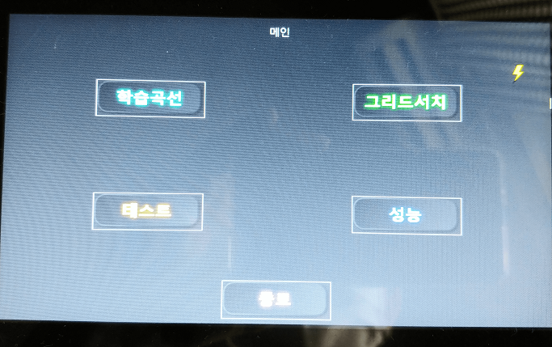메인 화면입니다.
- 학습곡선: 훈련 데이터셋의 학습곡선을 출력 화면으로 진입합니다.
- 그리드서치: 훈련 데이터셋의 그리드서치 결과 출력 화면으로 진입합니다.
- 테스트: 학습된 모델을 통해 테스트 데이터셋의 개별 데이터에 대해 실제 값과 예측 값 비교 화면으로 진입합니다.
- 성능: 테스트 데이터셋에 대한 분류 성능 출력 화면으로 진입합니다.
- 종료: 시스템을 종료합니다.
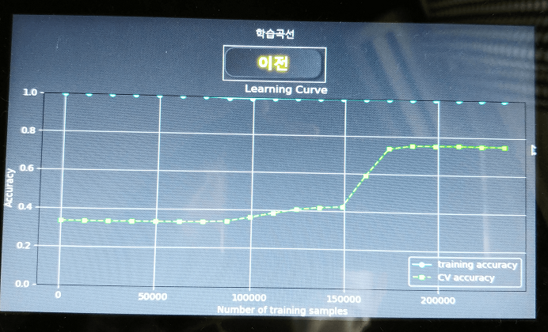학습곡선 화면입니다.
- 이전: 메인 화면으로 돌아갑니다.
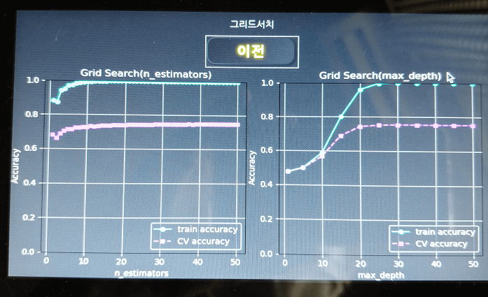그리드서치 화면입니다.
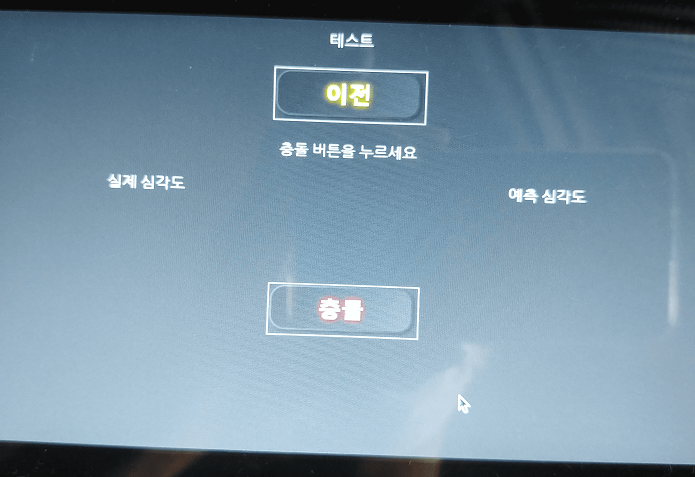 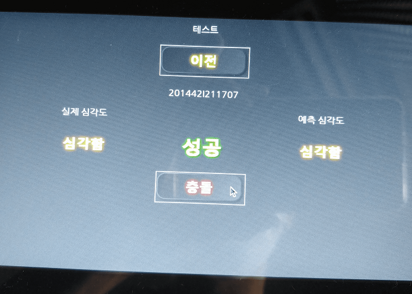테스트 화면입니다.
- 충돌: 무작위로 테스트 데이터셋 중 하나의 데이터에 대해 실제 심각도와 예측 심각도를 비교합니다.
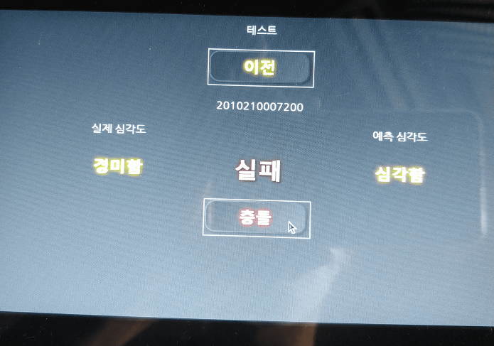각각 예측에 성공한 경우와 실패한 경우의 출력 화면입니다.
이전 버튼 아래에 사건의 인덱스를 표시하도록 했습니다.
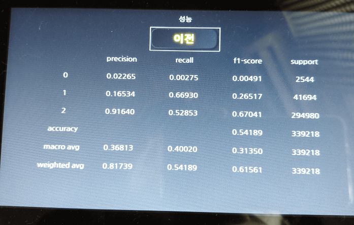성능 화면입니다.
학습된 모델로 테스트 데이터셋을 분류했을 때의 성능을 나타냅니다.
라즈베리파이 상에서는 버튼에 흰색 테두리가 생겨 이를 지우고 싶었으나 지우지 못했습니다.